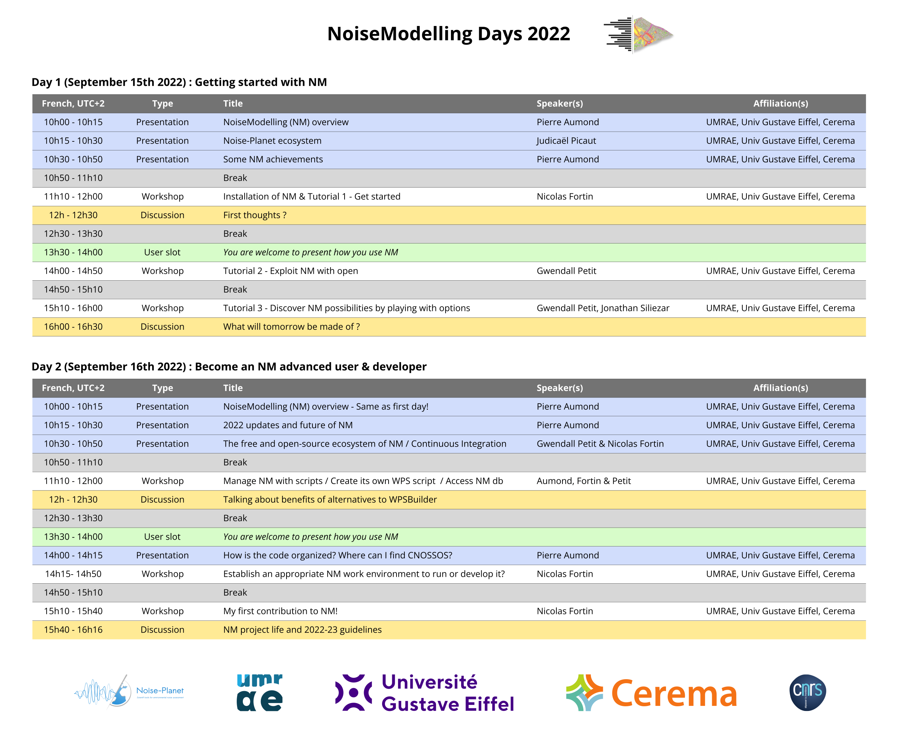

NoiseModelling days 2022
NoiseModelling days 2022
If you see this message, you are invited to participate to the “NoiseModelling days 2022” on September 15th and 16th, 2022 from 10am to 4.30pm (French, UTC+2) in the form of a webinar.
In 2020, we organized the first NoiseModelling (NM) days in the form of a general presentation of the tool and tutorials. In 2021, we focused on the users and their NM uses through scientific presentations.
This year 2022, we will focus on practice with a first day dedicated to new noisemodelling users (beginner to advanced), and a second day for expert NM uses and code contribution.
We will still keep some user slots for you to present your work with NM. If you are interested, please send an email directly to pierre.aumond@univ-eiffel.fr.
The final goal is to federate a community around NoiseModelling.
Participate
Participation in the seminar is free of charge but registration is required at the following link: https://forms.gle/jgr9sdgKoj9RYQYa7.
Participants must register by Septembre 13th, 2022.
Practical information will be sent to registered persons.
Program
Looking forward to meet you (even virtually)!